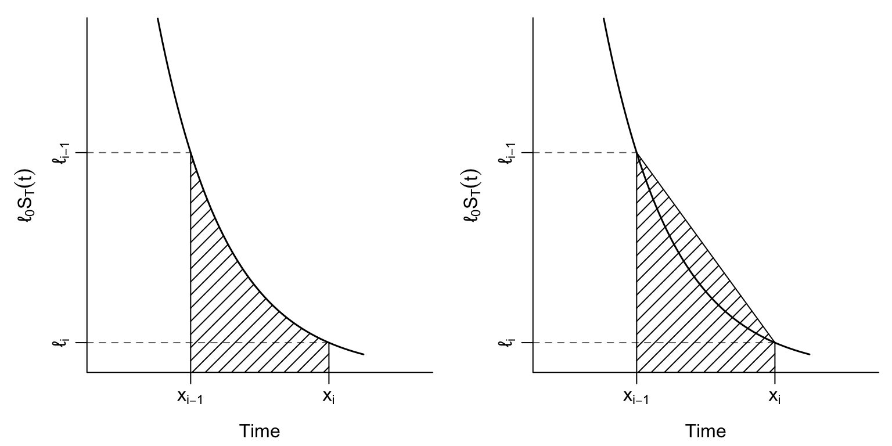

x_left <- 1.5
x_right <- 3.5
y_left <- exp(-x_left)
y_right <- exp(-x_right)
draw_panel <- function(trapezium = FALSE) {
plot(NA_real_, NA_real_, xlim = c(0, 5), ylim = c(0, 0.36),
xaxs = "i", yaxs = "i", axes = FALSE,
xlab = "Time", ylab = expression("\u2113"[0] * S[T](t)))
axis(1, at = c(x_left, x_right), labels = expression(x[i - 1], x[i]),
lwd = 0, lwd.ticks = 1)
axis(2, at = c(y_right, y_left),
labels = expression("\u2113"[i], "\u2113"[i - 1]),
lwd = 0, lwd.ticks = 1)
segments(0, c(y_left, y_right), c(x_left, x_right),
c(y_left, y_right), lty = 2, col = "grey45")
if (trapezium) {
top_x <- c(x_left, x_right)
top_y <- c(y_left, y_right)
} else {
top_x <- seq(x_left, x_right, length.out = 200)
top_y <- exp(-top_x)
}
polygon(c(x_left, top_x, x_right), c(0, top_y, 0),
density = 12, angle = 45, col = "black", border = "black")
curve(exp(-x), from = 1, to = 4, add = TRUE, lwd = 1.5)
box(bty = "l")
}
old_par <- par(mfrow = c(1, 2), mar = c(3.3, 3.9, 0.8, 0.6),
mgp = c(2.1, 0.6, 0))
draw_panel()
draw_panel(trapezium = TRUE)